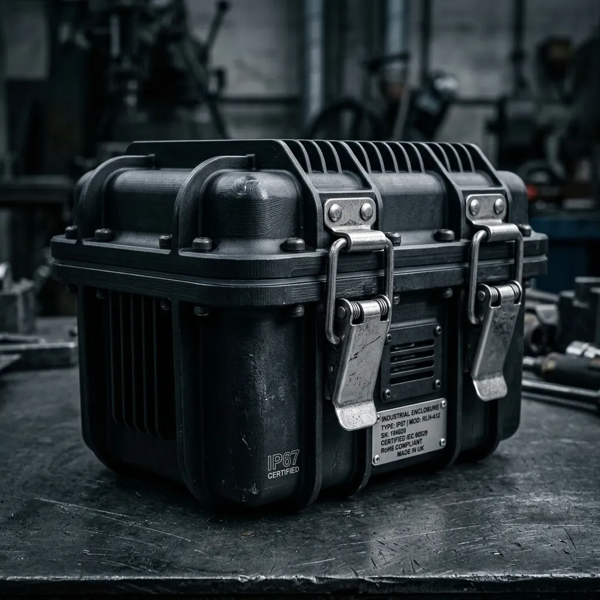

Precision Aluminium Micro-Climates
Standard horticultural enclosures fail predictably when pushed to their limits. Cheaply manufactured acrylic panels warp under the intense heat generated by high-output grow lights, eventually cracking or compromising the structural sealant. At Nepenthes Forge & Flight, we abandon plastics entirely. Our containment hardware is constructed exclusively from thick, aerospace-grade aluminium. This material selection is not merely an aesthetic choice; it provides a profound functional superiority. The dense metal shell acts as a massive thermal heat sink, rapidly dissipating excess internal temperatures generated by the lighting rigs before it can harm delicate flora. Furthermore, the immense shock resistance of the aluminium structure guarantees that the biosphere remains wholly intact and fully operational, even during rough overland transport across unpaved terrain.

Modular LED Lighting Arrays
Providing accurate photosynthetic radiation within a completely sealed environment requires highly calibrated equipment. Our Modular LED Lighting Arrays are engineered specifically to emulate the stark, intense sunlight experienced in high-altitude equatorial zones, without the lethal by-product of radiant heat.
- 6500K Daylight Spectrum: Every diode is tuned to emit a crisp, six thousand five hundred Kelvin colour temperature. This precise spectrum triggers aggressive vegetative growth and intense red pigmentation in the pitchers of highland Nepenthes species.
- Integrated Aluminium Heat-Sinks: Heat is the enemy of closed-system terrariums. Our arrays feature heavily finned, solid aluminium backing plates mounted entirely outside the containment zone. This ensures thermal energy radiates into the ambient room, categorically preventing catastrophic internal overheating.
- Programmable Photoperiod Timers: Mimicking seasonal shifts is critical for initiating flowering cycles. The integrated control unit allows for minute-by-minute adjustments to the photoperiod, ensuring the plants experience an exact, rigid dawn-to-dusk cycle regardless of the external season.
Certified IP67 Environmental Isolation
We do not rely on theoretical durability; we demand empirical proof. Every flight case that leaves our Pretoria facility carries a certified IP67 environmental rating. This classification guarantees total, uncompromising protection against the ingress of dust, particulate matter, and fungal spores.
More importantly, the rating signifies profound resistance to moisture. The cases are tested against high-pressure water jets, confirming that the heavily compressed neoprene seals and stainless steel draw latches will not yield under extreme duress. We subject all latches to military-grade cyclic fatigue testing, operating the mechanisms three thousand times under load to verify their long-term resilience. When the latches are clamped shut, the internal environment is utterly isolated from the surrounding world.
View Certification DocsTechnical Constraints & Cooling FAQ
What is the maximum temperature delta the peltier cooler can achieve?
The standard cooling module is engineered to drop the internal ambient temperature by a maximum of fifteen degrees Celsius below the external room temperature. This is highly dependent on keeping the external heat sinks free of dust.
How do I handle condensation drainage?
High humidity invariably leads to condensation on the cooler metal surfaces. Every unit features a one-way, gravity-fed drainage valve at the lowest point of the chassis, allowing excess distilled water to safely exit without breaking the atmospheric seal.
What is the power draw of the peltier systems?
A single active cooling unit draws exactly seventy-two watts at peak operation. They are highly efficient but require a stable, uninterrupted power source to prevent rapid temperature spikes within the chamber.
How long will the battery backup last during load-shedding?
When equipped with the optional high-capacity lithium auxiliary cell, the cooling fans and ultrasonic fogger will maintain nominal operation for fourteen consecutive hours before requiring a recharge from the main grid.
What is the protocol for cleaning the ultrasonic fogger discs?
The ceramic oscillator discs must be wiped down with a sterile cotton swab dipped in pure isopropyl alcohol every sixty days. Do not use tap water, as calcification will permanently destroy the vibration mechanism.
Hardware Specification Tiers
We manufacture our containment systems in three distinct classifications to accommodate varying botanical collections and logistical requirements.
| Specification Tier | Dimensions (L x W x H) | Cooling Capacity | Baseline Pricing (ZAR) |
|---|---|---|---|
| The Desktop Vault | 450mm x 300mm x 400mm | Single Peltier Module (-10°C Delta) | R 8,500.00 |
| The Transit Case | 800mm x 450mm x 600mm | Dual Peltier Array (-15°C Delta) | R 14,200.00 |
| The Botanical Safe | 1200mm x 600mm x 1000mm | Quad Industrial Array (-18°C Delta) | R 28,900.00 |
All units are constructed to order and require a six-week lead time from the date of final schematic approval. Custom volumetric expansions are available upon direct consultation with our engineering team.
Configure Your Case